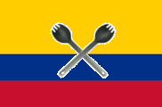

 Колумбійська кухня
АРЕПА
Арепа — коржі, виготовлені з кукурудзяного тіста або з кукурудзяного борошна, що займають важливе місце в кухнях Колумбії та Венесуели[1][2].
У цих країнах арепу вживають в їжу практично щодня. Вони також можуть розрізати навпіл і подаватися з начинкою, такою як сир (queso), авокадо тощо. Розміри, типи кукурудзяного борошна та інгредієнти які додаються, різняться. Арепу можна також зустріти в Панамі, Пуерто-Рико, в Домініканській Республіці, Тринідаді і Тобаго і на Канарських островах[3]. Вони схожі за формою з мексиканськими гордитами і сальвадорськими пупусами.
Характеристика
Арепа — плоский, круглий, прісний пиріжок з кукурудзяного борошна. За способом приготування він може бути смаженим, запеченим, вареним або тушкованим. Арепи також розрізняються за кольором, запахом, розміром та начинкою, в залежності від регіону. Арепи можуть бути начинені або покриті м'ясом, яйцями, помідорами, салатом, сиром, креветками або рибою.
Приготування
Кукурудзяне борошно змішують з водою і сіллю, а іноді і з олією або вершковим маслом, яйцями та/або молоком. З отриманої суміші легко формуються коржі у вигляді котлети. Підготовка кукурудзи для арепи проходить без нікстамалізації (варіння або вимочування насіння кукурудзи в розчині вапна або золи). Це робить борошно для арепи відмінним від борошна, яке використовують для виготовлення тортильї[4].
Спеціальне борошно для приготування арепи, зварене у воді, а потім висушене, використовується також для приготування таких страв, як хальякас, больйос, тамалес, емпанадас та чича. Борошно може називатися masarepa, masa de arepa, masa al instante (див. маса (їжа)) або harina precocida. Найпопулярнішими брендами кукурудзяного борошна для арепи є Harina PAN, Harina Juana і Goya у Венесуелі, Areparina в Колумбії[4].